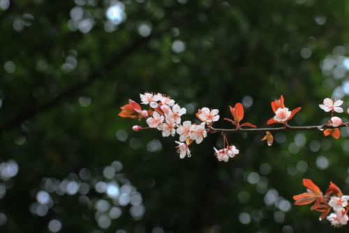
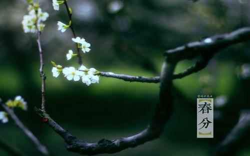
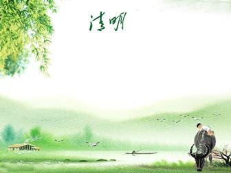
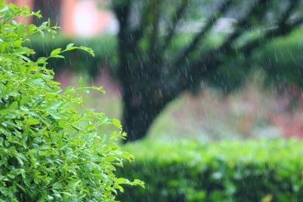

立春
宋.黄庭坚
韭苗香煮饼，
野老不知春。
看镜道如咫，
倚楼梅照人。- 
临安春雨初霁
宋.陆游
世味年来薄似纱，谁令骑马客京华。
小楼一夜听春雨，深巷明朝卖杏花。
矮纸斜行闲作草，晴窗细乳戏分茶。
素衣莫起风尘叹，犹及清明可到家。
惊蛰家人子辈为易疏帘
宋.范成大
二分春色到穷阎，儿女祈翁出滞淹。
幽蛰夜惊雷奋地，小窗朝爽日筛帘。
惠风全解墨池冻，清昼胜翻云笈签。
亲友莫嗔情话少，向来屏息似龟蟾。- 
画堂春·溪边风物已春分
宋.仲并
溪边风物已春分。画堂烟雨黄昏。
水沉一缕袅炉薰。尽醉芳尊。
舞袖飘摇回雪，歌喉宛转留云。
人间能得几回闻。丞相休嗔。 - 
清明
唐.杜牧
清明时节雨纷纷，
路上行人欲断魂。
借问酒家何处有？
牧童遥指杏花村。 - 
早春呈水部张十八员外
唐.韩愈
天街小雨润如酥，
草色遥看近却无。
最是一年春好处，
绝胜烟柳满皇都。